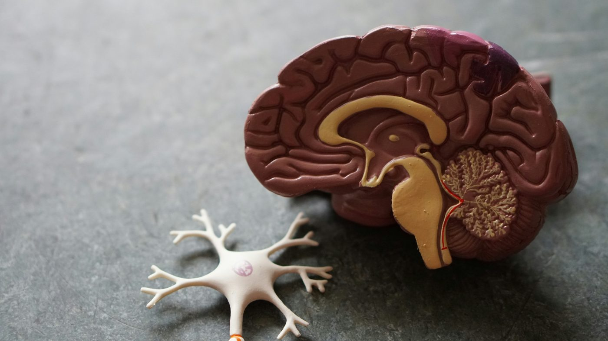
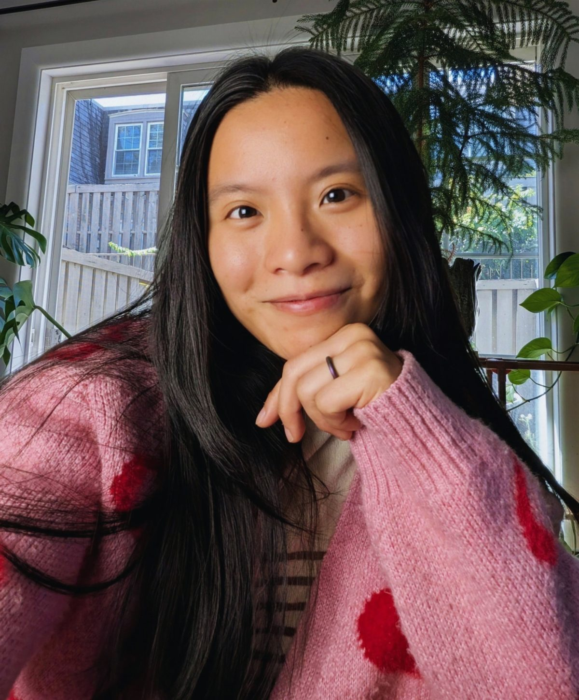

Mind-body counseling for chronic pain and stress · Nashville, TN
Your body keeps saying something is wrong. Let's listen to it together.
Maybe your tests came back normal, or treatment only helps so much. Together, we'll understand how stress lives in your body and build new pathways that help it settle.

Does this sound familiar?
You've been told, "Relax, it's just stress." But fighting stress often makes it louder.
Photo by Cheng Shi Song on Pexels
My mind-body approach
Your symptoms are real, and your brain plays a big part in them.
When stress or pain lasts, the nervous system's alarm can get stuck on. Your brain can learn new patterns, and we get there in three stages.
Photo by Cheng Shi Song on Pexels
01
Understand
I explain what's happening in your brain and body in plain language, so your symptoms make sense.
02
Make room
Using ACT, mindfulness and EMDR, you learn to make room for discomfort instead of fighting it.
03
Rebuild
Small, values-guided steps build new patterns until they become your new default.
Each time you practice a new response, you strengthen a new path in your brain. Over time, it becomes the easier one to take.
Read more: why work with the brain? →
Pain is the brain's protective alarm, not a direct measure of damage. One famous case shows this clearly.
What happened. In 1995, the British Medical Journal described a 29-year-old builder who jumped down onto a 15 cm (6-inch) nail. It went straight through his boot. He was in so much pain that the emergency team gave him strong pain medication before carefully removing the boot. Underneath, they found the nail had passed between his toes. His foot was completely uninjured.
What it shows. His pain was real. But it came from his brain's judgment of danger, not from damage. The brain decides how much something hurts based on what we see, expect, and fear, not only on what is happening in our tissues.
Why it matters for you. The same alarm can stay switched on. When stress, worry, or past pain keeps it on high alert, it can keep sounding long after the body has healed. That's why we work with the brain: an alarm that has learned to be overprotective can also learn to settle.
Source: Fisher et al., 1995, British Medical Journal (via PainScience)
What I help with
Counseling for chronic pain, anxiety, and stress in Nashville
For individuals and couples, in person or by telehealth.
Chronic pain
Ease the fear and weight of pain, and learn how your nervous system turns it up or down.
Read more →Anxiety and stress
Build a calmer, steadier relationship with anxious thoughts and feelings.
Living between cultures
Support for anyone navigating more than one culture.
Couples therapy
When stress comes home, your relationship feels it too.
Stress and pain rarely stay with one person. They show up as short tempers, distance, or the same argument on repeat.
I especially love working with young couples, including interracial and international couples navigating two cultures, two families, and sometimes two languages.
I'm trained in the Gottman Method, an approach to couples therapy built on five decades of relationship research by Drs. John and Julie Gottman.
How the Gottman Method works
01
Get a clear picture
We start with a joint session, a session with each of you, and a research-based questionnaire to map your relationship's strengths and challenges.
02
Rebuild friendship
You reconnect through small, everyday moments: knowing each other's world, sharing appreciation, and turning toward each other.
03
Fight differently
You learn to spot four patterns that research links to relationship trouble (criticism, contempt, defensiveness and stonewalling) and replace them with gentler ways to talk.
Where the brain-body work comes in. When an argument heats up, your body can flood with stress, and it becomes hard to really listen. We practice noticing that moment and calming down together, so you can come back and hear each other.

About me
Hi, I'm Chenxi. I know this work personally.
As an athlete and a recovering perfectionist, I've lived with chronic pain, stress-related GI issues and burnout. Understanding the neuroscience behind them was my turning point. Now I help others do the same.
- Master's in counseling, Vanderbilt University
- Bachelor's in neuroscience, Oberlin College
- EMDR trained
- Four years of clinical practice with clients from diverse backgrounds
I am an Associate Licensed Professional Counselor, Mental Health Service Provider in Tennessee (associate license #7341). I practice at Full Circle Counseling of TN under the clinical supervision of Stephanie Grissom, MA, LPC-MHSP S.
For doctors, physical therapists, and acupuncturists
I'm glad to coordinate care with your patient's consent, and to refer clients to you when your work is a good fit.
Workshops for workplaces and teams
Burnout and sleep workshops for high-performing teams
Interactive 60- or 90-minute workshops on stress, sleep and pain, virtual or in person in the Nashville area.
Fees
Care built around you, not insurance limits
Sessions are self-pay, so care fits your needs and stays private. Not sure it fits your budget? Let's talk in a free consultation.
Questions about insurance or telehealth? →Photo by Cheng Shi Song on Pexels
I'd love to hear your story.
Reach out to schedule a free 15-minute consultation. I'll get back to you within 1–2 business days.
Phone: 615-823-1992
Email: chenxi_zhu2024@proton.me
If you are in crisis, please call or text 988, or call 911. This form is not monitored for emergencies.